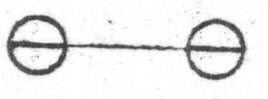

Kant: AA XIX, Erläuterungen zu G. Achenwalls Iuris ... , Seite 604 |
|||||||
Zeile:
|
Text:
|
|
|
||||
| 01 | S. I: | ||||||
| 02 |  vid. C, A unten. |
||||||
| 03 | Hiebey ist es freylich Zufall, wenn diese begonnene Staatveränderung | ||||||
| 04 | gerade auf ein großes und über sein Interesse aufgeklärtes Volk | ||||||
| 05 | trifft, da ein kleineres der Gegenrevolution ausgesetzt und so | ||||||
| 06 | die endlich doch unvermeidliche Umänderung der Dinge verspätet werden | ||||||
| 07 | würde. | ||||||
| 08 | |
||||||
| 09 | Was ist das es, was die bloße Zuschauer (g der Revolution ) eines | ||||||
| 10 | sich vorher absolut beherrschten, jetzt sich unter den größten inneren und | ||||||
| 11 | äußeren Bedrängnissen republicanisirenden Staats Volks mit so lebhafter | ||||||
| 12 | Theilnehmung und Wunsch zum Gelingen (g dieser ) ihrer Unternehmung | ||||||
| 13 | erfüllt: daß selbst die Unterthanen eines eben so beherrschten, | ||||||
| 14 | die dergleichen, könnte es auch ohne gewaltsame Revolution geschehen, für | ||||||
| 15 | sich nicht wünschen (theils, weil es ihnen (g erträglich ) wohlgeht, vornehmlich | ||||||
| 16 | theils am meisten aber, weil die Lage des Staats, dem sie angehören, | ||||||
| 17 | zwischen den benachbarten keine andere Verfassung desselben (als die Monarchische | ||||||
| 18 | für den ihrigen) erlaubt, ohne Gefahr zu laufen, daß er aufgelöset | ||||||
| 19 | werde), daß, sage ich, diese bloße Zuschauer mit Affect daran (g ganz | ||||||
| 20 | uneigennützigen ) Antheil nehmen. -- Das Factum ist unbezweifelt wahr | ||||||
| 21 | und in der Crisis der französischen Staatsumwandlung und unerachtet | ||||||
| 22 | aller dab damit verbundenen schrecklichen Übel und Greuel nicht blos an | ||||||
| 23 | dem kannegießernden gemeinen sondern auch dem mit Sachkenntniß räsonnirenden | ||||||
| 24 | aufgeklärten Mann, bey der ungeduldigen der und heissen | ||||||
| 25 | Begierde (g desselben ) nach Zeitungen und als dem Stoffe zu (g den interessantesten ) | ||||||
| 26 | gesellschaftlichen Unterhaltungen (die darum keinesweges | ||||||
| 27 | politische Clubbs sind) unverkennbar wahrzunehmen. -- Hieran (g und | ||||||
| 28 | um einen solchen Enthusiasm allgemein zu erwecken ) muß ein wahres oder | ||||||
| 29 | wenigstens gutmüthig gemeintes Interesse des ganzen Menschengeschlechts | ||||||
| 30 | dem Zuschauer vorschweben, der sich hier eine Epoche denckt, von welcher | ||||||
| 31 | an der unsere Gattung nicht länger im (g steten ) Schwancken Besseren | ||||||
| [ Seite 603 ] [ Seite 605 ] [ Inhaltsverzeichnis ] |
|||||||
;){kind=link}